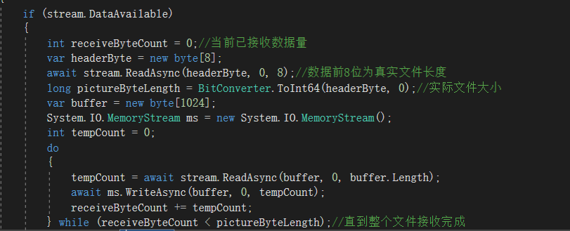

1、在tcp连接中，Networkstream可以重复读取，重复写入，不用关掉连接。
2、关掉NetworkStream会自动关闭掉Tcp连接
3、NetworkStream不需要使用Flush方法，数据会自动发送。
4、NetworkStream.read会阻塞线程直到有新的数据过来，所以，有同学会发现，发送端不释放，接收端不能接收到数据。接收前先判断 DataAvailable 没有数据的不进行Read就能实时收到数据了
5、如果发送端发送快，接收端接收慢，会造成数据堆叠，即接收端一次可能接收到发送端多次发送的数据流，可以在接收端返回确认接收完成后，再让发送端发送新数据。
6、怎么才能把NetworkStream流读完整（实现方案：在每次数据流的前8个字节存入本次发送的文件总长度，如下图）
